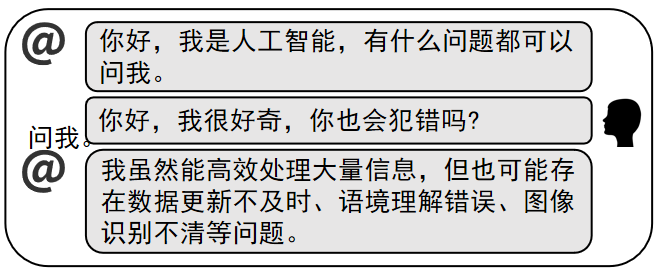

2025年北京市中考道德与法治真题 · 选择题 第11、12、13、14、15题
11. 2025年是 暨世界反法西斯战争胜利80周年，这一胜利是正义战胜邪恶、光明战胜黑暗、进步战胜反动的伟大胜利。中国战场对世界反法西斯战争的胜利、维护世界和平作出了巨大贡献。（ ）
A. 南昌起义B. 红军长征C. 中国人民抗日战争D. 抗美援朝战争
12. 某同学与“人工智能”进行了如下对话。

这告诉我们，使用人工智能辅助学习时要（ ）
A. 发现并保持对学习的兴趣B. 不断激发潜能，实现自我超越
C. 坚持独立思考，学会辨别筛选信息D. 传播网络正能量，慎重对待网上交友
13.
13.
他是一名“骑手”，为了实现年少时的诗歌梦，工作之余坚持创作，于街巷之中发现生活之美。如今他已出版诗集。 | 他是一名“棋手”，源于从小的热爱，更在于后来的坚持，他以无畏的勇气和精湛的技艺被誉为“‘棋’迹青年”。 | 他是一名“旗手”，在天安门广场观看升旗时播下了梦想 种子，这颗种子深深扎根、奋力生长。他如愿成为国旗护卫队的升旗手。 种子，这颗种子深深扎根、奋力生长。他如愿成为国旗护卫队的升旗手。 |
以上三个故事共同的主题是（ ）
A. 不断努力奋斗，实现人生梦想
B. 学会欣赏他人，敢于挑战权威
C. 积极改进规则，做到行己有耻
D. 正视自身不足，坚定职业选择
14. “我们应该向父母倾诉自己所有的事情，还是选择性分享?”“与朋友产生分歧时，应该坚持自己的立场还是听从对方?”人际交往中我们可能会遇到很多类似的困惑。解决这些困惑的基本之道是（ ）
①保持个性，特立独行 ②一味迎合，一团和气
③平等尊重，换位思考 ④主动沟通，坦诚交流
A. ①②B. ①③C. ②④D. ③④
15. 对以下名句的解读，正确的是（ ）
序号 | 名句 | 解读 |
① | 日省其身，有则改之，无则加勉 | 通过自省端正自己的行为 |
② | 不积跬步，无以至千里 | 每个人有不同的人生道路，每个人的生命都不可替代 |
③ | 友直，友谅，友多闻，益矣 | 我们要学会坦然接受一段友谊的淡出 |
④ | 师者，所以传道授业解惑也 | 老师是我们学习的指导者和成长的引路人 |
A. ①②B. ①④C. ②③D. ③④